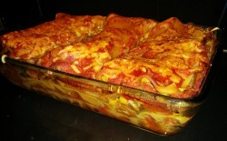
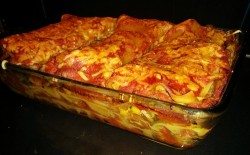
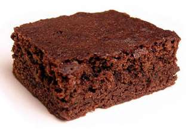

recepten
Lasange
Lasagne is een Italiaanse ovenschotel die wordt bereid met dunne pastabladen van circa 10 bij 15 cm.
In het Nederlands worden deze bladen lasagnebladen genoemd, in het Italiaans worden ze aangeduid met lasagne (meervoud).
Soms wordt ook de complete schotel in het Italiaans met deze term aangeduid, ofwel lasagne al forno (bladen uit de oven).
 

Burrito
Burrito
Een burrito is een Mexicaans gerecht dat zijn oorsprong heeft in het noorden van Mexico of zuidwesten
van de Verenigde Staten van Amerika.Deze delicatesse van de Mexicaanse cultuur bestaat uit een tortilla,
vervaardigd uit tarwebloem, meestal gevuld met bonen en vlees (meestal gehakt of kip), soms ook kaas),
en opgerold zodat de vulling binnenin de tortilla zit.

brownie
Een brownie is een chocoladegebakje met veel boter en suiker, gegarneerd met pecannoten. Het gebak wordt in
vierkante stukken gesneden en geserveerd met een beetje room.
